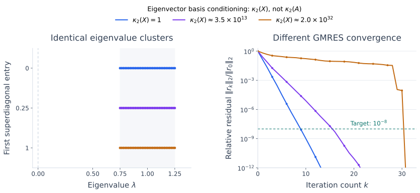

The Generalized Minimal Residual Method (GMRES)#
From Conjugate Gradients to GMRES#
The conjugate gradient method uses symmetry and positive definiteness to minimize the energy norm of the error with a short recurrence. For a general nonsymmetric matrix, that construction no longer gives the same guarantees. Generalized minimal residual (GMRES) instead minimizes the Euclidean norm of the residual, using Arnoldi to build its search space.
We consider a real nonsingular system \(Ax=b\), with \(A\in\mathbb R^{n\times n}\). As in the CG section, \(x\) denotes the exact solution and \(x_k\) the approximation after \(k\) iterations. The derivation and convergence results below assume exact arithmetic; practical stopping checks are discussed afterward.
A New Objective: Minimizing the Residual#
Choose an initial guess \(x_0\) and compute
If \(r_0=0\), the initial guess is already the solution. Otherwise, search for a correction in
Thus the candidates are \(x_0+z\) with \(z\in\mathcal K_k\). When \(x_0=0\), this reduces to the search in \(\mathcal K_k(A,b)\) used in the preceding CG derivation.
CG chooses the candidate with the smallest energy error. GMRES chooses the candidate with the smallest residual:
This objective is computable from \(A\) and \(b\), without knowing \(x\). It is also an error minimization in a different norm: since \(r_k=A(x-x_k)\),
Nonsingularity makes \(A^TA\) positive definite, so this is a valid norm. This identity explains the objective; GMRES does not form \(A^TA\). We solve the least-squares problem using the orthogonal transformations developed earlier in the book.
Deriving the GMRES Least-Squares Problem#
The Arnoldi Relation#
Start the Arnoldi process with \(q_1=r_0/\beta\). Let \(Q_k=[q_1,\ldots,q_k]\) contain its orthonormal basis vectors. Every candidate can be written as
Recall that Arnoldi gives \(AQ_k=Q_kH_k+f_ke_k^T\), where \(H_k\) is \(k\times k\) and upper Hessenberg. The remainder is \(f_k=h_{k+1,k}q_{k+1}\) when it is nonzero. Appending this last direction gives
Here \(\underline H_k\) is \((k+1)\times k\), and \(e_k\) is the last coordinate vector in \(\mathbb R^k\). Its only possible nonzero entries below the diagonal lie immediately below it. This is the rectangular form of the Arnoldi relation. The case \(h_{k+1,k}=0\), when there is no new direction, is discussed below.
Transforming the Problem#
The residual for a candidate \(x_0+Q_k y\) is \(r_0-AQ_k y\). Because \(q_1\) is the first column of \(Q_{k+1}\), we have \(r_0=\beta q_1=Q_{k+1}(\beta e_1)\), where \(e_1\) is the first coordinate vector in \(\mathbb R^{k+1}\). Substitution gives
Orthonormal columns preserve Euclidean lengths. Indeed, \(Q_{k+1}^TQ_{k+1}=I\) implies
The original \(n\times k\) least-squares problem therefore reduces to
This is the central GMRES calculation: choose the best combination of the available basis vectors by solving a \((k+1)\times k\) least-squares problem.
Solving the Small Problem Efficiently#
One Arnoldi Step#
At iteration \(k\), compute \(w=Aq_k\), subtract its components along \(q_1,\ldots,q_k\), and record the coefficients in column \(k\) of \(\underline H_k\). Normalize the remaining vector to obtain \(q_{k+1}\), provided its norm \(h_{k+1,k}\) is nonzero.
Unlike Lanczos for a symmetric matrix, Arnoldi generally needs to orthogonalize against every preceding basis vector. The extra work is the cost of treating general nonsymmetric systems.
Update the QR Factorization#
We use Givens rotations to solve the small least-squares problem. There is no need to factor the whole matrix again at every step.
First apply the rotations from the previous iteration to the new column. Since \(\underline H_k\) is upper Hessenberg, only one additional rotation is needed to eliminate the remaining entry in row \(k+1\). Write \(G_j^T\) for the rotation acting on rows \(j\) and \(j+1\); earlier rotations act as the identity on any newly added rows. Together they give
where \(R_k\) is \(k\times k\) and upper triangular.
Apply exactly the same rotations to the right-hand side:
The vector \(t_k\) contains the first \(k\) entries of the transformed right-hand side; \(\rho_k\) is its last entry. Orthogonal rotations preserve the norm, so
Since \(A\) is nonsingular and \(Q_k\) has independent columns, \(AQ_k\) has rank \(k\). The Arnoldi relation then gives full column rank for \(\underline H_k\), so \(R_k\) is nonsingular. We can make the first term zero by solving
Consequently,
This is the computational benefit of updating the QR factorization: we can monitor the residual norm using one scalar, without forming \(x_k\) or \(r_k\) at every step. We can also postpone the triangular solve for \(y_k\) until we need the approximate solution. This is the implementation strategy described in Netlib’s GMRES notes.
Form the Approximation and Check It#
For example, a relative-residual stopping test is \(|\rho_k|\le\mathrm{tol}\,\beta\), where tol is the requested reduction relative to the initial residual. Once this test is met, solve for \(y_k\) and form
In floating-point arithmetic, loss of basis orthogonality and rounding errors can make \(|\rho_k|\) differ from \(\|b-Ax_k\|_2\). Check the explicitly computed residual before accepting the answer. A scaled residual test, such as the one in the Jacobi implementation, measures backward error; solution accuracy also depends on the conditioning of \(A\).
When Arnoldi Has No New Direction#
If \(h_{k+1,k}=0\), do not divide by it to form \(q_{k+1}\). Instead, use the relation \(AQ_k=Q_kH_k\). It says that \(A\) maps \(\mathcal K_k\) into itself. Since \(A\) is nonsingular, the \(k\) columns of \(AQ_k\) are independent and form another basis of this same space. In particular, \(r_0\in\mathcal K_k\) can be written as \(AQ_k y\) for some \(y\).
The reduced system \(H_k y=\beta e_1\) therefore gives an exact solution \(x=x_0+Q_k y\). For a nonsingular system, this exact termination of Arnoldi is successful completion of GMRES. No extra basis vector is needed.
Computational Cost and Restarting#
At iteration \(k\), standard GMRES stores \(k\) basis vectors and orthogonalizes the next vector against all of them. This requires \(O(nk)\) storage for the basis and \(O(nk)\) work for orthogonalization, in addition to the matrix-vector product. Updating the small QR factorization costs \(O(k)\) work, and its factors require \(O(k^2)\) storage. A triangular solve costs \(O(k^2)\) when an approximation is requested. CG, by contrast, stores only a fixed number of vectors and uses a fixed amount of vector work per step.
To limit the growing cost, restarted GMRES, written GMRES(\(m\)), keeps at most \(m\) search directions per cycle. After a cycle, form the approximation, use it as a new initial guess, and build a new Krylov basis from its residual. Stop earlier if the requested accuracy is reached.
Restarting retains the current approximation but discards the basis. It limits storage, but the new search spaces no longer contain all the earlier directions. It can therefore require more iterations than unrestarted GMRES, and can fail to converge.
Convergence of GMRES#
What Residual Minimization Guarantees#
For unrestarted GMRES, the search spaces grow with \(k\). The old approximation remains an available candidate at the next step, so
Thus residual norms cannot increase in exact arithmetic. They can, however, stay unchanged for several steps. If Arnoldi does not terminate earlier, \(n\) independent basis vectors span \(\mathbb R^n\), so unrestarted GMRES finds the exact solution in at most \(n\) steps. Neither statement guarantees that a useful tolerance is reached quickly.
The GMRES Polynomial Problem#
Every correction in \(\mathcal K_k\) has the form \(s(A)r_0\), where \(s\) is a polynomial of degree at most \(k-1\). Its residual is
The polynomial \(p\) has degree at most \(k\) and \(p(0)=1\). Conversely, every such \(p\) can be written this way because \(1-p(z)\) has a factor \(z\). Hence the GMRES minimization is exactly
where \(\mathcal P_k\) denotes the real polynomials of degree at most \(k\).
This connects GMRES to Chebyshev acceleration: both seek a polynomial equal to one at zero and small on the relevant matrix directions. Chebyshev chooses one using spectral bounds; GMRES chooses the polynomial that minimizes the actual residual for the given starting vector.
A Bound Using Eigenvalues#
Theorem 53 (GMRES Residual Bound)
For unrestarted GMRES, suppose \(A\) is diagonalizable over \(\mathbb C\), with \(A=X\Lambda X^{-1}\) and eigenvalues \(\lambda_1,\ldots,\lambda_n\). Then
where \(\kappa_2(X)=\|X\|_2\|X^{-1}\|_2\) measures the conditioning of the eigenvector basis.
Proof. For any admissible polynomial,
Minimizing over the same polynomials on both sides proves the bound.
Important
The factor is \(\kappa_2(X)\), not \(\kappa_2(A)\). The columns of \(X\) are eigenvectors, so \(\kappa_2(X)\) measures the conditioning of their basis. In contrast, \(\kappa_2(A)=\|A\|_2\|A^{-1}\|_2\) measures the sensitivity of the linear system. These can differ enormously: in the most nonnormal example below, \(\kappa_2(A)\approx133\), while \(\kappa_2(X)\approx2\times10^{32}\).
This bound, developed in the original GMRES paper, separates two effects. Favorable eigenvalue locations allow a low-degree polynomial to be small at all eigenvalues while remaining one at zero. For example, suppose all eigenvalues lie in a disc \(|z-a|\le\delta<|a|\) centered at a nonzero real number \(a\). The polynomial \((1-z/a)^k\) then has magnitude at most \((\delta/|a|)^k\) on that disc. Eigenvalues spread around the origin may be much harder to suppress.
The factor \(\kappa_2(X)\) accounts for the eigenvector basis. For a normal matrix, meaning \(A^TA=AA^T\) here, we can choose \(X\) unitary and this factor is one. Even then, the actual residual depends on how \(r_0\) is distributed among the eigenvectors. For a nonnormal matrix, a poorly conditioned eigenvector basis can make the bound much larger. Eigenvalue locations alone then provide limited guidance. The theorem does not cover matrices without an eigenvector basis, although GMRES itself still applies.
The figure isolates this issue by keeping the eigenvalues fixed while changing the eigenvectors. All three matrices have the same cluster away from zero. Nevertheless, GMRES takes substantially longer for the matrices with ill-conditioned eigenvector bases. A polynomial that is small at the eigenvalues need not make \(p(A)r_0\) equally small when those eigenvectors are nearly linearly dependent.


Fig. 29 Same eigenvalues, different convergence. The legend reports \(\kappa_2(X)\) for the eigenvector matrix, not \(\kappa_2(A)\). The \(33\times33\) matrices have diagonal entries evenly spaced in \([0.75,1.25]\), first superdiagonal entries \(0\), \(0.25\), or \(1\), and all other entries zero. Left: the identical spectra. Right: computed unrestarted GMRES residuals for the same right-hand side and \(x_0=0\); the target \(10^{-8}\) is reached in 9, 16, and 31 steps. Every column of \(X\) has unit length, so its condition number reflects the geometry of the eigenvectors rather than arbitrary column scaling. The computation uses reorthogonalization to preserve basis orthogonality. This is one illustrative family; \(\kappa_2(X)\) alone does not determine a convergence curve.#
An Example with No Residual Reduction Until the Last Step#
Let \(A\) cyclically shift the coordinate vectors:
Take \(b=e_1\) and \(x_0=0\). The solution is \(x=e_n\), while
For \(k<n\), applying \(A\) to this space gives \(\operatorname{span}\{e_2,\ldots,e_{k+1}\}\), which is perpendicular to \(b=e_1\). Therefore every candidate \(z\in\mathcal K_k\) satisfies
The minimum is attained at \(z=0\). Thus \(x_k=0\) and \(\|r_k\|_2=1\) for every \(k<n\). At step \(n\), the space contains \(e_n\) and GMRES gives the exact solution.
This matrix is orthogonal, with all eigenvalues on the unit circle, yet there is no residual reduction before the last step. Optimality over each search space does not imply rapid convergence. Restarting this example with \(m<n\) repeats the same unproductive cycle, so restarted GMRES does not converge.
The next section compares the objectives, work, and storage of CG and GMRES before we specialize residual minimization to symmetric matrices with MINRES.